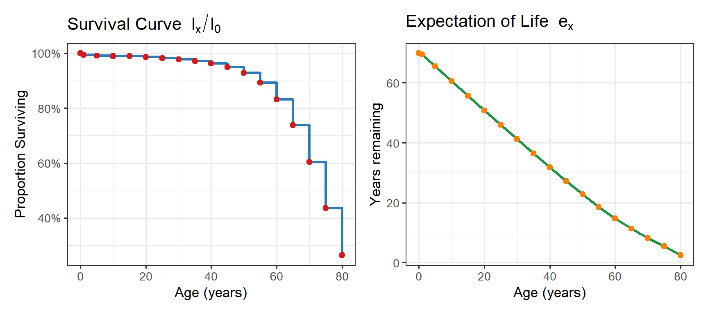
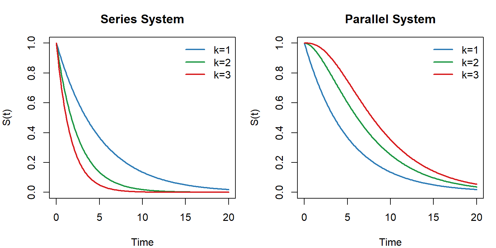

systemfonts and textshaping have been compiled with different versions of Freetype. Because of this, textshaping will not use the font cache provided by systemfonts4 Life Tables
The life table is one of the oldest statistical tools, tracing its origins to John Graunt’s Natural and Political Observations on the Bills of Mortality (1662). A life table systematically summarises the mortality experience of a cohort, translating age-specific death rates into survival probabilities and expectations of life. It is the direct ancestor of the Kaplan–Meier estimator, which can be thought of as a continuous-time, censoring-adjusted life table.
4.1 Components of a Life Table
The standard life table columns are:
| Symbol | Name | Meaning |
|---|---|---|
| \(x\) | Age (or time) | Start of the interval \([x, x+n)\) |
| \(l_x\) | Survivors | Number alive at exact age \(x\) out of \(l_0\) (radix) |
| \(d_x\) | Deaths | Number dying in \([x, x+n)\) |
| \(q_x\) | Probability of death | \(d_x / l_x\) — conditional on being alive at \(x\) |
| \(p_x\) | Probability of survival | \(1 - q_x\) |
| \(m_x\) | Central death rate | Deaths per person-year in \([x, x+n)\) |
| \(L_x\) | Person-years lived | Exposure in \([x, x+n)\): \(L_x \approx n(l_x - d_x/2)\) |
| \(T_x\) | Total years lived | \(\sum_{u \geq x} L_u\) |
| \(e_x\) | Expectation of life | \(T_x / l_x\) — mean future lifetime at age \(x\) |
4.2 Constructing a Life Table
4.2.1 Step 1: Obtain Age-Specific Death Rates
From vital statistics or a cohort study, compute \(m_x = D_x / P_x\) for each age group.
4.2.2 Step 2: Convert \(m_x\) to \(q_x\)
For an \(n\)-year interval, assuming uniform distribution of deaths:
\[q_x = \frac{n \cdot m_x}{1 + (n/2) \cdot m_x}\]
4.2.3 Step 3: Compute \(l_x\) and \(d_x\)
Starting with radix \(l_0 = 100{,}000\):
\[l_{x+n} = l_x \cdot p_x = l_x \cdot (1 - q_x), \qquad d_x = l_x \cdot q_x\]
4.2.4 Step 4: Compute Person-Years and Expectations
\[L_x = n \cdot l_{x+n} + \frac{n}{2} \cdot d_x, \qquad T_x = \sum_{u=x}^{\omega} L_u, \qquad e_x = \frac{T_x}{l_x}\]
# Input: age-specific central death rates (per 1000 per year)
lt <- data.frame(
x = c(0,1,5,10,15,20,25,30,35,40,45,50,55,60,65,70,75,80),
n = c(1,4,5,5,5,5,5,5,5,5,5,5,5,5,5,5,5,5),
mx = c(7.2,0.5,0.3,0.2,0.4,0.9,1.0,1.2,1.8,2.8,4.5,8.0,
14.0,24.0,40.0,65.0,100.0,180.0) / 1000
)
# Compute qx (Reed-Merrell approximation: qx = 1 - exp(-n*mx) for small mx)
lt$qx <- 1 - exp(-lt$n * lt$mx)
lt$qx[nrow(lt)] <- 1.0 # everyone dies in final interval
# Compute lx and dx
l0 <- 100000
lt$lx <- numeric(nrow(lt))
lt$lx[1] <- l0
for (i in 2:nrow(lt)) lt$lx[i] <- lt$lx[i-1] * (1 - lt$qx[i-1])
lt$dx <- lt$lx * lt$qx
# Person-years
lt$Lx <- ifelse(lt$n == 1,
lt$lx - 0.1 * lt$dx, # infant
lt$n * (lt$lx - lt$dx / 2))
# T_x and e_x
lt$Tx <- rev(cumsum(rev(lt$Lx)))
lt$ex <- lt$Tx / lt$lx
lt |>
mutate(across(c(mx,qx), \(x) round(x,4)),
across(c(lx,dx,Lx,Tx), \(x) round(x,0)),
ex = round(ex,1)) |>
kbl(col.names = c("x","n","m_x","q_x","l_x","d_x","L_x","T_x","e_x"),
align = "c") |>
kable_styling(bootstrap_options = c("striped","hover","condensed"),
full_width = FALSE, position = "center",
font_size = 12)| x | n | m_x | q_x | l_x | d_x | L_x | T_x | e_x |
|---|---|---|---|---|---|---|---|---|
| 0 | 1 | 0.0072 | 0.0072 | 100000 | 717 | 99928 | 6993777 | 69.9 |
| 1 | 4 | 0.0005 | 0.0020 | 99283 | 198 | 396734 | 6893849 | 69.4 |
| 5 | 5 | 0.0003 | 0.0015 | 99084 | 149 | 495050 | 6497115 | 65.6 |
| 10 | 5 | 0.0002 | 0.0010 | 98936 | 99 | 494431 | 6002065 | 60.7 |
| 15 | 5 | 0.0004 | 0.0020 | 98837 | 197 | 493690 | 5507634 | 55.7 |
| 20 | 5 | 0.0009 | 0.0045 | 98639 | 443 | 492090 | 5013944 | 50.8 |
| 25 | 5 | 0.0010 | 0.0050 | 98196 | 490 | 489758 | 4521854 | 46.0 |
| 30 | 5 | 0.0012 | 0.0060 | 97707 | 584 | 487072 | 4032096 | 41.3 |
| 35 | 5 | 0.0018 | 0.0090 | 97122 | 870 | 483436 | 3545024 | 36.5 |
| 40 | 5 | 0.0028 | 0.0139 | 96252 | 1338 | 477915 | 3061588 | 31.8 |
| 45 | 5 | 0.0045 | 0.0222 | 94914 | 2112 | 469290 | 2583673 | 27.2 |
| 50 | 5 | 0.0080 | 0.0392 | 92802 | 3639 | 454914 | 2114383 | 22.8 |
| 55 | 5 | 0.0140 | 0.0676 | 89163 | 6028 | 430747 | 1659469 | 18.6 |
| 60 | 5 | 0.0240 | 0.1131 | 83135 | 9401 | 392175 | 1228722 | 14.8 |
| 65 | 5 | 0.0400 | 0.1813 | 73734 | 13366 | 335258 | 836548 | 11.3 |
| 70 | 5 | 0.0650 | 0.2775 | 60369 | 16751 | 259967 | 501290 | 8.3 |
| 75 | 5 | 0.1000 | 0.3935 | 43618 | 17162 | 175184 | 241323 | 5.5 |
| 80 | 5 | 0.1800 | 1.0000 | 26456 | 26456 | 66139 | 66139 | 2.5 |
p1 <- ggplot(lt, aes(x = x, y = lx / l0)) +
geom_step(colour = "#2C7BB6", linewidth = 1.2) +
geom_point(colour = "#D7191C", size = 2) +
scale_y_continuous(labels = scales::percent) +
labs(title = expression(paste("Survival Curve ", l[x]/l[0])),
x = "Age (years)", y = "Proportion Surviving")
p2 <- ggplot(lt, aes(x = x, y = ex)) +
geom_line(colour = "#1A9641", linewidth = 1.2) +
geom_point(colour = "#FF7F00", size = 2) +
labs(title = expression(paste("Expectation of Life ", e[x])),
x = "Age (years)", y = "Years remaining")
library(patchwork)
p1 + p2
4.3 Series and Parallel Systems
In reliability and biological contexts, organisms or systems may be modelled as combinations of components:
Series system (weakest-link): fails when the first of \(k\) components fails.
\[S_{\text{series}}(t) = \prod_{j=1}^k S_j(t), \qquad h_{\text{series}}(t) = \sum_{j=1}^k h_j(t)\]
Parallel system (redundant): fails only when all \(k\) components fail.
\[S_{\text{parallel}}(t) = 1 - \prod_{j=1}^k [1 - S_j(t)]\]
t <- seq(0, 20, by = 0.1)
lam <- 0.2
k_vals <- c(1, 2, 3)
cols <- c("#2C7BB6","#1A9641","#D7191C")
par(mfrow = c(1,2), mar = c(4,4,3,1))
# Series
plot(t, exp(-lam*t), type="l", col=cols[1], lwd=2,
ylim=c(0,1), xlab="Time", ylab="S(t)",
main="Series System")
for (i in 2:3) lines(t, exp(-i*lam*t), col=cols[i], lwd=2)
legend("topright", legend=paste0("k=",k_vals),
col=cols, lwd=2, bty="n")
# Parallel
plot(t, 1-(1-exp(-lam*t))^1, type="l", col=cols[1], lwd=2,
ylim=c(0,1), xlab="Time", ylab="S(t)",
main="Parallel System")
for (i in 2:3) lines(t, 1-(1-exp(-lam*t))^i, col=cols[i], lwd=2)
legend("topright", legend=paste0("k=",k_vals),
col=cols, lwd=2, bty="n")
Historical Insights
John Graunt (1620–1674) was a London haberdasher with no formal scientific training who became the founder of demography. His 1662 Natural and Political Observations Made upon the Bills of Mortality was the first systematic analysis of birth and death statistics. He constructed what is believed to be the first life table, estimated the population of London, and noticed that more boys were born than girls but that men died younger — observations that hold to this day. He was elected a Fellow of the Royal Society at the personal insistence of King Charles II.
Quotes to Inspire
“Statistics are the triumph of the quantitative method, and the quantitative method is the victory of sterility and death.”
— Hilaire Belloc (a dissenting view — included to encourage critical thinking!)